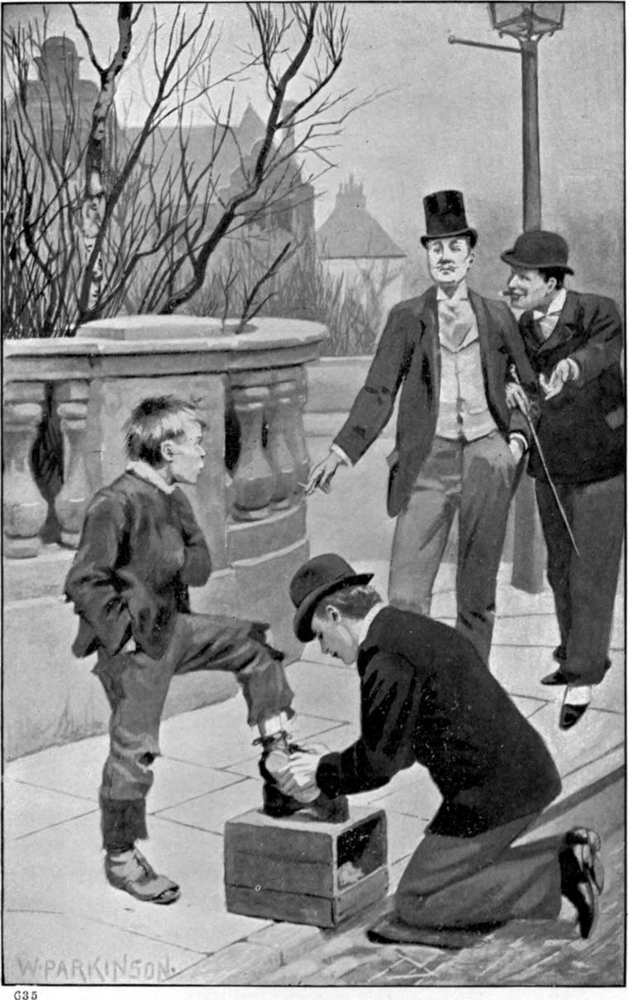

The head-clerk, while he had not a word against him, as he confessed to Mr. Shotover, yet thought Clare would never make a man of business. When pressed to say on what he grounded the opinion, he could only answer that the lad did not seem to have his heart in it. But if, to be a man of business, it is not enough to do one’s duty scrupulously, but the very heart must be in it, then is there something wrong with business. The heart fares as its treasure: who would be content his heart should fare as not a few sorts of treasure must? Mr. Woolrige passed no such judgment, however, upon certain older young men in the bank, whose hearts certainly were not in the business, but even worse posited.
One cold, miserable day, at once damp and frosty, on which it was quite unfit to take Ann out, Clare, having eaten a hasty dinner, and followed it with a walk, was returning through the town in good time for the recommencement of business, when he came upon a little boy, at the corner of a street, blowing his fingers, and stumping up and down the pavement to keep his blood moving while he waited for a job: his brushes lay on the top of his blacking-box on the curbstone. Clare saw that he was both hungry and cold—states of sensation with which he was far too familiar to look on the signs of them with indifference. To give him something to do, and so something to eat, he went to his block and put his foot on it. The boy bustled up, snatched at his brushes, and began operations. But, whether from the coldness or incapacity of his hands, Clare soon saw that his boots would not be polished that afternoon.
“You don’t seem quite up to your business, my boy!” he said. “What’s the matter?”
The boy made no answer, but went on with his vain attempt. A moment more, and Clare saw a tear fall on the boot he was at work upon.
“This won’t do!” said Clare. “Let me look at your boots.”
The boy stood up, wiping his eyes with the back of his hand.
“Ah!” said Clare, “I don’t wonder you can’t polish my boots, when you don’t care to polish your own!”
“Please, sir,” answered the boy, “it’s Jim as does it! He’s down wi’ the measles, an’ I ain’t up to it.”
“Look here, then! I’ll give you a lesson,” said Clare. “Many’s the boot I’ve blacked. Up with your foot! I’ll soon show you how the thing’s done!”
“Please, sir,” objected the boy, “there ain’t enough boot left to take a polish!”
“We’ll see about that!” returned Clare. “Put it up. I’ve worn worse in my time.”
The boy obeyed. The boot was very bad, but there was enough leather to carry some blacking, and the skin took the rest.
Clare was working away, growing pleasantly hot with the quick, sharp motion, while two of his fellow clerks were strolling up on the other side of the corner, who had been having more with their lunch than was good for them. Swinging round, they came upon a well dressed youth brushing a ragged boy’s boots. It was an odd sight, and one of them, whose name was Marway, thought to get some fun out of the phenomenon.

“Here!” he cried, “I want my boots brushed.”
Clare rose to his feet, saying,
“Brush the gentleman’s boots. I will finish yours after, and then you shall finish mine.”
“Hullo, Nursie! it’s you turned boot-black, is it?—Nice thing for the office, Jack!” remarked Marway, who was the finest gentleman, and the lowest blackguard among the clerks.
He put his foot on the block. The boy began his task, but did no better with his boots than he had done with Clare’s.
“Soul of an ass!” cried Marway, “are you going to keep my foot there till it freezes to the block? Why don’t you do as Nursie tells you? He knows how to brush a boot! You ain’t worth your salt! You ain’t fit to black a donkey’s hoofs!”
“Give me the brushes, my boy,” said Clare.
The boy rose abashed, and obeyed. After a few of Clare’s light rapid strokes, the boots looked very different.
“Bravo, Nursie!” cried Marway. “There ain’t a flunkey of you all could do it better!”
Clare said nothing, finished the job, and stood up. Marway, turning on the other heel as he set his foot down, said, “Thank you, Nursie!” and was walking off.
“Please, Mr. Marway, give the boy his penny,” said Clare.
But Marway wanted to take a rise out of Clare.
“The fool did nothing for me!” he answered. “He made my boot worse than it was.”
“It was I did nothing for you, Mr. Marway,” rejoined Clare. “What I did, I did for the boy.”
“Then let the boy pay you!” said Marway.
The shoe-black went into a sudden rage, caught up one of his brushes, and flung it at Marway as he turned. It struck him on the side of the head. Marway swore, stalked up to Clare and knocked him down, then strode away with a grin.
The shoe-black sent his second brush whizzing past his ear, but he took no notice. Clare got up, little the worse, only bruised.
“See what comes of doing things in a passion!” he said, as the boy came back with the brushes he had hastened to secure. “Here’s your penny! Put up your foot.”
The boy did as he was told, but kept foaming out rage at the bloke that had refused him his penny, and knocked down his friend. It did not occur to him that he was himself the cause of the outrage, and that his friend had suffered for him. Clare’s head ached a good deal, but he polished the boy’s boots. Then he made him try again on his boots, when, warmed by his rage, he did a little better. Clare gave him another penny, and went to the bank.
Marway was not there, nor did he show himself for a day or two. Clare said nothing about what had taken place, neither did the others.